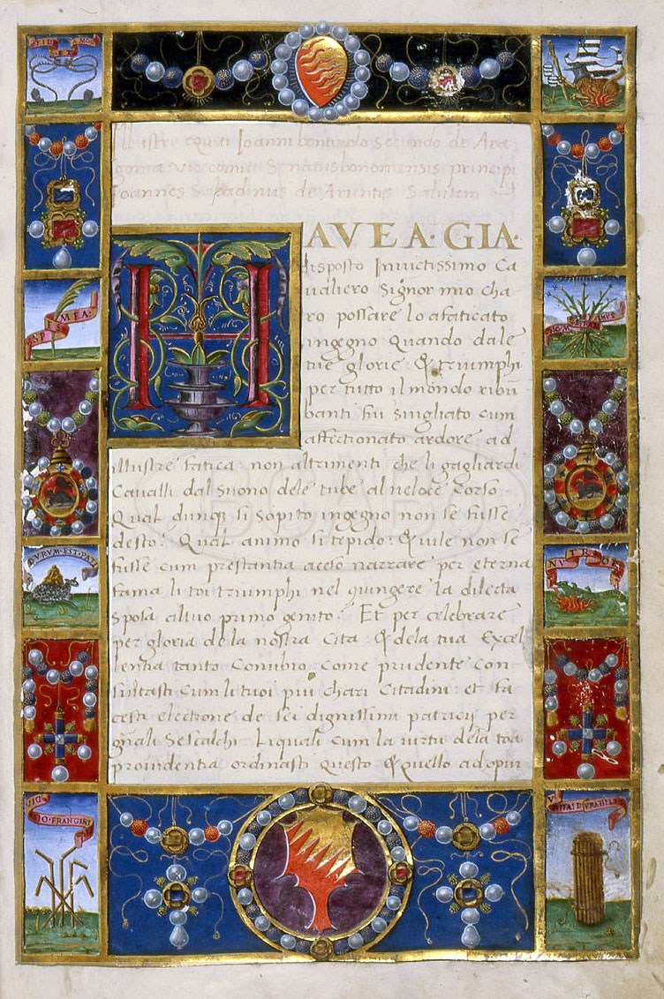
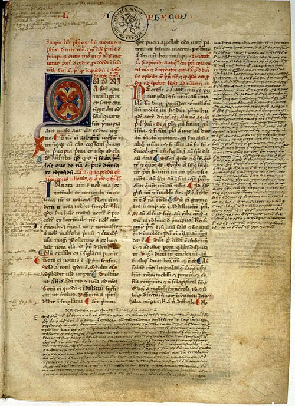
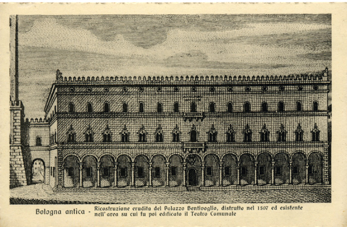

Hymenaeus Bentivolus
Giovanni Sabadino degli Arienti (1487)

Descrizione dell'Item
L'Hymenaeus Bentivolus è una celebre orazione nuziale ed epitalamio umanistico in latino composto dal letterato e storiografo Giovanni Sabadino degli Arienti in occasione del matrimonio tra Annibale II Bentivoglio (figlio di Giovanni II) e Lucrezia d'Este, celebratosi a Bologna nel 1487.
L'opera rappresenta uno dei punti più alti della propaganda politica e della cultura umanistica bentivolesca. Attraverso un raffinato stile e densi richiami classici, Sabadino degli Arienti celebra l'alleanza strategica tra la signoria di Bologna e la casata d'Este, magnificando la magnificenza della casa Bentivoglio.
Metadati Descrittivi (TEI P5 / Dublin Core)
| Identificativo ID | IT06 |
|---|---|
| Titolo | Hymenaeus Bentivolus: edizione digitale e codifica semantica |
| Autore | Sabadino degli Arienti, Giovanni (Authority: VIAF) |
| Datazione e Luogo | 1487 — Bologna |
| Tipologia Item | Manoscritto / Manoscritto cartaceo |
| Lingua | Latino umanistico (lat) |
| Luogo di Conservazione | Biblioteca Comunale dell'Archiginnasio (BCABo) (Bologna, Italia) - Segnatura: ms. B.4602, c. 1r |
| Soggetti / Temi | Anniballe II Viaf, Lucrezia d'Este Wikidata, Giovanni II, Nozze di Annibale e Lucrezia (1487), Epitalamio, Umanesimo |
Codifica SORGENTE e Metadati (XML)
L'item è descritto formalmente tramite metadati Dublin Core (Qualified DC) e codificato nel testo integrale secondo lo standard TEI P5:
<?xml version="1.0" encoding="UTF-8"?>
<?xml-model href="http://www.tei-c.org/release/xml/tei/custom/schema/relaxng/tei_all.rng" type="application/xml" schematypens="http://relaxng.org/ns/structure/1.0"?>
<TEI xmlns="http://www.tei-c.org/ns/1.0">
<teiHeader>
<fileDesc>
<titleStmt>
<title>Hymenaeus Bentivolus: edizione digitale e codifica semantica</title>
<author ref="https://viaf.org/viaf/44293577/">Sabadino degli Arienti, Giovanni</author>
<respStmt>
<resp>Trascrizione e codifica TEI P5 a cura di</resp>
<name>La Bologna Bentivolesca (1463-1506) - Enrico Spadoni</name>
</respStmt>
</titleStmt>
<publicationStmt>
<publisher>Università di Bologna - Corso di Digital Humanities e Patrimonio Culturale</publisher>
<pubPlace>Bologna</pubPlace>
<date when="2026">2026</date>
<availability>
<licence target="https://creativecommons.org/licenses/by/4.0/">
Distribuito con licenza Creative Commons Attribution 4.0 International (CC BY 4.0)
</licence>
</availability>
</publicationStmt>
<sourceDesc>
<msDesc>
<msIdentifier>
<country>Italia</country>
<settlement>Bologna</settlement>
<repository ref="https://www.geonames.org/11839837/">Biblioteca Comunale dell'Archiginnasio (BCABo)</repository>
<idno>ms. B.4602</idno>
<altIdentifier type="foliation">
<idno>c. 1r</idno>
</altIdentifier>
</msIdentifier>
<msContents>
<summary>Hymenaeus Bentivolus di Giovanni Sabadino degli Arienti, epitalamio composto in occasione delle nozze tra Annibale II Bentivoglio e Lucrezia d'Este (1487).</summary>
<textLang mainLang="lat">Latino umanistico</textLang>
</msContents>
<physDesc>
<objectDesc>
<supportDesc form="codex">
<support>Carta (paper)</support>
</supportDesc>
</objectDesc>
</physDesc>
<history>
<origin>
<origDate when="1487">1487</origDate>
<origPlace ref="https://www.geonames.org/3181928/">Bologna</origPlace>
</origin>
</history>
</msDesc>
</sourceDesc>
</fileDesc>
<profileDesc>
<textClass>
<keywords scheme="http://vocab.getty.edu/aat/">
<term>Manoscritti</term>
<term>Epitalami</term>
<term>Umanesimo</term>
</keywords>
</textClass>
</profileDesc>
</teiHeader>
<text>
<body>
<div type="oratio">
<pb n="1r" facs="#c1r"/>
<head>Ioannis Sabadini de Arientis Hymenaeus Bentivolus</head>
<p>
Cum in cunctis nuptiarum adparatibus illud praecipue ornatui esse soleat, ut celeberrimi oratores ac poetae fausta vota concinnent... in felicissimis nuptiis inclyti principis <persName key="bentivoglio_annibale_2" ref="http://viaf.org/viaf/13375926">Hannibalis Bentivoli</persName> et illustrissimae <persName key="este_lucrezia" ref="https://www.wikidata.org/wiki/Q60841132">Lucretiae Estensis</persName>...
</p>
</div>
</body>
</text>
</TEI>Connessioni di Rete
Archi della rete di grafi collegati a questo nodo:
- composto da Giovanni Sabadino degli Arienti
- celebra le nozze di Annibale II Bentivoglio
- sposa celebrata Lucrezia d'Este
- conservato presso BCABo (ms. B.4602)
Item Correlati

Cronica di Giacomo Gigli
Manoscritto cronachistico bolognese (ms. B.4602)